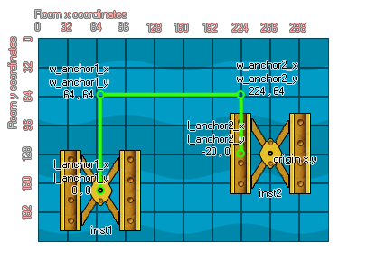

physics_joint_pulley_create
Create a pulley joint connecting two instances in such a way that the movement of one will have a direct influence over the movement of the other.
Syntax :
physics_joint_pulley_create(inst1, inst2, w_anchor1_x, w_anchor1_y, w_anchor2_x, w_anchor2_y, l_anchor1_x, l_anchor1_y, l_anchor2_x, l_anchor2_y, ratio, max_len1, max_len2, col)
| Argument | Description |
|---|---|
| inst1 | The first instance to connect with the joint |
| inst2 | The second instance to connect with the joint |
| w_anchor1_x | The x coordinate where the first part of joint is anchored, within the game world |
| w_anchor1_y | The y coordinate where the first part of the joint is anchored, within the game world |
| w_anchor2_x | The x coordinate where the second part of the joint is anchored, within the game world |
| w_anchor2_y | The y coordinate where the second part of the joint is anchored, within the game world |
| l_anchor1_x | The local x coordinate where joint 1 is anchored to the first instance |
| l_anchor1_y | The local y coordinate where joint 1 is anchored to the first instance |
| l_anchor2_x | The local x coordinate where joint 2 is anchored to the second instance |
| l_anchor2_y | The local y coordinate where joint 2 is anchored to the second instance |
| ratio | Set the velocity ratio between two instances |
| max_len1 | The maximum extension for the connection between inst1 and joint 1 |
| max_len2 | The maximum extension for the connection between inst2 and joint 2 |
| col | Whether the two instances can collide (true) or not (false) |
Returns : index of the joint
Description
The pulley joint is used to connect two instances within the physics world in such a way that moving one will directly influence the movement of the other. These joints are first anchored in the world space at
two points, each one connected to an instance at its center of mass. This can be changed by setting the local anchor x/y coordinates relative to the origin of the instance, meaning that the actual connection
from the instance to the physics world anchor point can be offset somewhere other than its origin. The following image illustrates this:

If you look at inst2 you can see that its local anchor point has been offset 20 pixels to the "left" of its origin (Remember! The world anchor points are defined using the room coordinates, while the local anchor
points are defined relative to the origin of the instance). You can also specify a ratio for the pulley joint, which tells one side or the other to move faster, with a value below 1 making the first instance move faster
(E.G. 0.5 will make it move twice as fast) and a value above 1 making the second instance move faster (E.G. 2 will make it move twice as fast), as well as a maximum length that each instance is permitted to
extend to from its corresponding joint anchor, relative to the x/y anchor position for that joint.
As with all the joints, if you set the "col" value to true then the two instances can interact and collide with each other but only if they have collision events, however if it is set to false,
they will not collide no matter what.
Example :
var t_fix, inst1, inst2;
t_fix = physics_fixture_create();
physics_fixture_set_circle_shape(t_fix, 20);
inst1 = instance_create(150, room_height - 90, obj_Block);
inst2 = instance_create(300, room_height - 90, obj_block);
physics_fixture_bind(inst1, t_fix);
physics_fixture_bind(inst2, t_fix);
physics_joint_pulley_create(inst1, inst2, 150, room_height - 140, 300, room_height - 140, 0, 0, 0, 0, 2, 120, 120, 0);
physics_fixture_delete(t_fix);
The above code creates and defines a new fixture, creates two instances of "obj_Block", and then binds this fixture two them. It then goes on to define a pulley joint between these instance, with no offset for the joints, a ratio of 2:1 (meaning that inst2 will move faster), and a maximum length of 120. No collisions occur between the two instances in the pulley.